Simic
Counterfactual Generative Morphogenesis
New neural structure is generated from the live state of a host network — not selected from a fixed menu of human-authored blueprints — then causally screened against doing nothing. Measured counterfactuals instead of a reward function.
Pre-implementation bootstrap. The design is locked — HLD v4.1, Namespec 1.0 — and under active hardening: 38 design-review findings are open, including several unresolved contract shapes. A Python scaffold exists, but there is no functional code yet. First engineering work is Phase A: Namespec, Leyline contracts, and dependency boundaries. Nothing on this site describes a running system or a measured result.
The idea#
Growing a neural network at runtime raises four questions that existing systems tend to blur together: what new structure to add, whether it is structurally sound, whether it actually helps, and who gets to decide. Simic separates those concerns constitutionally.
Structure is designed from live host telemetry; verified and canonicalised; compiled without semantic change; tested in flash-cloned counterfactual branches that share an identical future with the mainline; and admitted only if it beats a mandatory no-op alternative under a provider-blind judge. Everything — including failures, rejected pools, and no-op wins — is retained as history.
Admitted structure is never permanent by default: it matures behind the host, blends in reversibly, must keep earning its tenancy, and is sedated or lysed when it no longer does.
The loop, end to end#

01-claim.md
§ Executive summary, with the no-op outcome and the maintenance warrant
from 04-architecture.md
§ Candidate assurance and adjudication and INV-15, INV-16, INV-27.
Why counterfactuals, not a reward function#
Paired branches start from one snapshot and run over identical futures, so ordinary-training variance cancels and the difference between branches is the intervention effect. That converts credit assignment into supervised learning: ranking over measured pools, per-step classification against counterfactual labels, and explicit adjudication rules. The genuinely irreducible reinforcement learning shrinks to strategic allocation and tactical timing.
The counterfactual apparatus is therefore not overhead wrapped around a policy learner — it is the machine that manufactures the supervision signal. That choice was forced by a documented record, which is the subject of Why this design looks like this.
Guarantees#
The constitution defines 45 blocking invariants, cited throughout the design
as INV-nn. The spine:
- Determinism INV-05 Identical snapshot plus identical future data produces bitwise-identical traces under the Academy execution profile. Non-exact profiles carry measured uncertainty instead of pretending.
- Doing nothing is a real competitor INV-15, INV-16 Every admission and tenancy review includes a measured no-intervention branch with policy utility exactly zero. The whole candidate pool may lose to it.
- Tail risk cannot be bought INV-45 Admission is lexicographic: the tail-risk veto is adjudicated before any utility comparison, and no measured benefit can offset it.
- Evidence and judgement never mix INV-17, INV-18, INV-37 Urabrask certifies evidence but cannot issue verdicts; Augustin decides but cannot touch tests. Neither ever sees candidate provenance — blinding is by construction, meaning the fields are absent rather than ignored.
- No influence without a warrant INV-26, INV-27 Kasmina cannot raise a growth above zero influence, and Emrakul cannot retire committed structure, without a valid Augustin warrant.
- Absent signal stays absent INV-38 Invariant breaches fail loudly and visibly. No silent fallback fabricates valid-looking state, and a missing telemetry field never becomes a zero.
- Complete history INV-31, INV-36 Sarpadia is append-only and keeps failures, rejected pools, no-op wins and abstentions — never winners-only.
- Observability is inert INV-35 Disconnecting Oona cannot change training.
Fourteen domains, one sentence#
Authority is split across fourteen bounded domains with deliberately vivid codenames. The names are not decoration: they act as an architecture linter, because a subsystem acting contrary to its verb is exercising authority it must not have.
Nissa observes and reports. Tamiyo plans. Narset commissions and acts. Momir designs. Elesh conforms. Tezzeret compiles. Urabrask tests the compiled result in Tolaria. Augustin judges the resulting evidence under Leyline. Kasmina embodies the admitted growth. Emrakul destroys what no longer earns continued tenancy. Sarpadia retains every precedent. Oona reveals the account.
The canonical sentence —02-constitution.md§ The canonical sentence
The architecture deliberately resembles a newsroom, because both must keep observation, assignment, authorship, standards, production, fact-checking, publication judgement and archive on separate desks. The load-bearing routing rule:
Nissa sends the photograph directly to the designer. Narset sends only the assignment brief.
What this is not#
The initial implementation does not attempt:
- unrestricted source-code generation, or arbitrary whole-network rewriting;
- autonomous modification of the training runtime;
- unbounded or Turing-complete growth grammars;
- learned control of every lifecycle and economy parameter from the outset;
- simultaneous growth across many regions before single-region reliability exists;
- continual learning without forgetting as a guaranteed property;
- replacement of ordinary host optimisation;
- or proof that generated growth is superior at every scale.
The first defensible claim is narrower:
Given a typed insertion contract and a measured host deficit, can the system generate, verify, compile, causally screen, and safely integrate a useful constrained growth more quickly and reliably than comparable online construction, retrieval, random search, analytic construction, or static over-provisioning?
01-claim.md§ Non-goals
A negative generative result remains scientifically useful if the architecture cleanly shows that some simpler alternative dominates at the tested scale.
Where the design lives#
The canonical authority is the HLD chapter set in the repository, not this site. Each chapter below is published on this domain at /design/, and the same paths locate it in the repository.
| Path | Contents |
|---|---|
| docs/design/00-INDEX.md | Entry point to the HLD chapter set, with reading paths |
| docs/design/01-claim.md | Executive summary, problem statement, goals, non-goals, the first defensible claim |
| docs/design/02-constitution.md | Naming constitution and the 45 blocking invariants |
| docs/design/03-principles.md | Design principles and the architectural smell catalogue |
| docs/design/04-architecture.md | System context, planes, and the control hierarchy |
| docs/adr/ | Architecture decision records |
| docs/product/ | Product workspace — vision, roadmap, metrics, decisions |
| src/simic/ | Target code layout: one package per domain (scaffold only, today) |
Implementation follows Phases A–K, defined in
programme/phases.md.
Python is the working language. The project is licensed Apache-2.0.